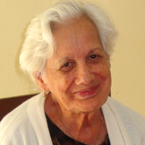

Hugo
Meu nome é Hugo e tenho 98 anos, sou bancário aposentado, fui casado por mais ou menos 67 anos e tenho um filho muito carinhoso.
Moro na “O Asilo” há cerca de 6 anos.
Vim pra entidade porque fiquei viúvo e estava morando sozinho, e me sentia solitário e um pouco isolado do mundo,
mesmo meu filho visitando com freqüência. Sendo assim eu e meu filho resolvemos fazer uma experiência de morar
na “O Asilo” por um período para ver se eu me adaptava.
Os meus primeiros dias foram de observação, não me senti deprimido, apenas senti falta do que deixei para trás.
Com o decorrer dos dias fui me adaptando, passei a entender que o que ficou para trás não supria minhas necessidades,
e passei a me sentir seguro, rodeado de funcionários prestativos, bondosos e carinhosos. Encontrei aqui um meio
de voltar à vida com boas amizades para me relacionar, expandir minhas idéias e recordar os bons tempos da juventude.
Preservei o hábito de ouvir boas músicas, ler poesias e contar minha experiência de vida aos mais jovens. Sinto-me
acolhido, amado e tranqüilo, por saber que meu filho esta despreocupado, pois estou em um ótimo lugar.
Iley Sevilha
Minha mãe teve A.V.C em maio de 2004, desde então ela está na “O Asilo”, há mais ou menos 6 anos e meio.
Minha mãe sempre foi uma pessoa dinâmica, alegre, cozinhava muitíssimo bem, fazia velas artesanais, pintava tecidos,
fazia bijuterias e pintava estátuas de gesso, gostava de cantar e dançar, muito bonita e vaidosa. Quando teve AVC,
ficou na UTI e foi uma surpresa triste para todos nós.
Antes de chegar na “O Asilo” fui visitar 20 instituições pessoalmente com meu pai, que hoje tem 89 anos. Optamos
por essa, minha mãe chegou aqui sem falar absolutamente nada, com o olhar triste, perdida e cheia de medo. Fomos
recebidos com muito amor, carinho e calma fazendo com que minha mãe reagisse com risada e segurança.
Hoje minha mãe da boas gargalhadas, faz fonoterapia, fisioterapia, participa das atividades, passeios é muito querida
por todos que fazem o nome “O Asilo” ser o que é hoje. Minha mãe progrediu bastante dentro das limitações
que ela tem, seu olhar é calmo, tranqüilo, sereno e cheio de amor. Venho todos os dias à tarde visitar minha mãe,
nesses 6 anos e meio nunca faltei. A família tem que fazer a sua parte junto ao morador, enchê-lo de carinho e
amor. (Filha) Mariley Fervilho
José Pazzotti
Meu nome é José Pazzotti, fui inspetor de alunos na USP, fiquei viúvo em 2005. Não quis morar com meus filhos e resolvi morar
sozinho, mas senti muita solidão e a necessidade de me relacionar com outras pessoas.
Então pedi para os meus filhos procurarem uma instituição para eu morar. Dentre vários locais visitados optei pela
“O Asilo”.
Demorei para me adaptar, apesar da equipe de funcionários dar toda atenção necessária, fazia questão de participar
de todas as atividades, passeios e festas, então passei a perceber que a instituição me proporcionava varias dinâmicas
que não vivia em casa.
Hoje estou rodeado de pessoas amáveis, moro em um local maravilhoso, na verdade para mim é um hotel cinco estrelas.
Minha felicidade é mais que completa, pois encontrei um novo amor e estou namorando há mais de um ano com a moradora
Zizi, a qual amo de paixão.

Natalina
Meu nome é Natalina, tenho 91 anos e dois filhos. Há mais ou menos 25 anos sou viúva. Em 1995 o filho com quem eu morava
resolveu fazer uma viagem com a esposa, então me deixou por um mês na “O Asilo”. Eu me adaptei muito bem,
participava de todas as atividades, adorava os passeios e principalmente de conviver com pessoas da mesma idade.
Quando meu filho chegou de viagem e veio me buscar, não queria mais voltar a morar com ele, dizia que estava muito
bem aqui e gostaria de continuar morando na “O Asilo”.
Ele não aceitou minha decisão, pois dizia que eu tinha família e casa, logo não precisava ser institucionalizada.
Então mesmo contra minha vontade me levou embora. Fiquei muito contrariada e resolvi fazer greve de fome em minha
casa.
Assim meu filho entendeu que o melhor para mim era retornar a entidade, onde vivo feliz até hoje.
Zizi - Maria José
Meu nome é Maria José, mas todos me chamam carinhosamente de Zizi.
Nasci com uma irmã gêmea e aos 2 anos, tivemos poliomielite, infelizmente minha irmã faleceu e eu fiquei tetraplégica.
Sempre fui bem cuidada pela minha mãe e mesmo com minhas limitações me sentia feliz. Infelizmente em 2007 minha mãe
faleceu.
Então solicitei aos meus sobrinhos que procurassem um abrigo para eu morar. Eles visitaram várias casas e optaram
pela “O Asilo”, porque acharam um lugar aconchegante.
Nunca pensei que encontraria um lugar tão gostoso, onde faço trabalhos manuais e muitas outras atividades. Hoje me
sinto mais produtiva e feliz do que quando morava em casa.
Continuo minha amizade com minha família e saio todos os finais de semana com eles.
Aqui conheci um homem maravilhoso e ele me ensinou que nunca é tarde para amar. Comecei a namorar e pela primeira
vez me senti amada pelo sexo oposto.
Agradeço a Deus por “O Asilo” existir.